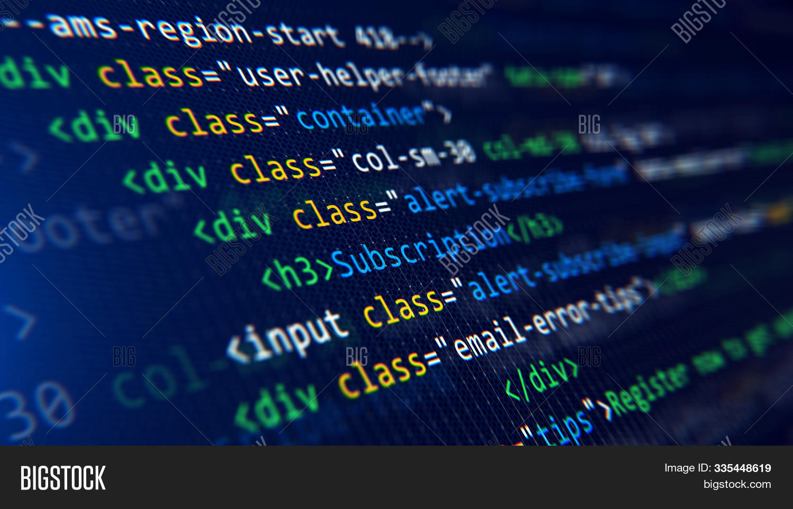

The Basic Language Of The Web :HTML
Posted By Nada Mohamed on saturday , December , 28/12/2024
All modern websites and web applications are built using three fundamental technologies: HTML, CSS and JavaScript. These are the languages of the web.
In this post, let's focus on HTML., We will learn what HTML is all about, and why you too should learn it.
What is HTML?
HTML stands for HyperText Markup Language. It's a markup language that web developers use to structure and describe the content of a webpage (not a programming language).
HTML consists of elements that describe different types of content: paragraphs, links, headings, images, video, etc. Web browsers understand HTML and render HTML code as websites.
In HTML, each clement is made up of 3 parts:
- The opening tag
- The closing tag
- The actual element
You can learn more at the MDN Weh Docs.
Why should you learn HTML?
There are countless reasons for leaming the fundamental language of the web, Here are 5 of them:
- To be able to use the fondamental web dev language
- To hand craft beautiful websites instead of relying on tools like Worpress or Wix
- To build web applications
- To impeess friends
- To have fun
Hopefully you learned something new here. See you next time!